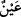

“Ne güzel bir katıktır.”[135] buyrulmuştur. Selef-i sâlihînden birçokları hayatını sirke ile
idame ettirmiştir Allah’tan devam üzere kanâat niyaz ederiz.
“Ve oralarda” yâni yeryüzünde “birçok pınarlar fışkırttık.”
el-Müfredât’ta geçtiği üzere “__WORD__ bir şeyi geniş bir şekilde yarmaktır. Bazıları “__WORD__ kelimesi, lafız ve mânâ bakımından “__WORD__ (çok açmak)” gibidir, demiştir. Tef’îl
bâbı çokluk bildirmek içindir.
“__WORD__ kelimesi “__WORD__ın çoğuludur. Aslında göz demektir. Şekil olarak ve suyun
kendisinden akması bakımından göze benzetilerek suyun menbaına da “__WORD__ denir.
Bilesin ki beldelerde ırmak ve pınarlar akıtmak, Allah Teâlâ’nın kullarına rahmetidir.
Çünkü her canlının hayatı sudandır. Bağlar, bostanlar su sayesinde güzelleşir ve yetişir.
Pınarlar ya akıcı olur ya da olmaz. Akıcı olanlar ırmaktan başkadır. Çünkü ırmaklar
pınarlardan daha çok ve geniştir. Çoğu zaman kaynağı da bilinmez. Meselâ mübârek Nil
nehrinin başı bulunamamıştır.[136] Akıcı olmayan pınarlar kuyulardır. Dünyada pek çok
pınarlar ve kuyular vardır. Bunların bazılarının fazladan özellikleri vardır. Meselâ
Isfahan ve Şiraz arasındaki Şeyrem pınarı bunlardandır. Bu pınar dünyanın hayret verici
yerlerindendir. Şöyle ki bir bölge çekirge istîlâsına uğradığı zaman bir kapta veya başka
bir şeyde bu pınardan su götürülür. Bu suyu “sümermer” adı verilen ve “sûdâniyye”
denilen siyah kuşlar takip eder. Öyle ki bu suyu taşıyan kişi onu yere koymaz ve dönüp
arkasına bakmaz. Böylece o kuşlar, çekirge istilasına uğrayan bölgeye ulaşıncaya kadar
siyah bir bulut gibi suyu taşıyan adamın başının üzerinde dururlar. O bölgeye varınca
kuşlar çekirgelerin üzerinde korkunç ses çıkarır ve onları öldürür. Artık yerinden
oynayan bir çekirge görülmez. Bilakis o kuşların sesleri ile ölürler.
Fakir (Bursevî) der ki: Rum sınırında da “çekirge suyu” denilen bir su vardır. Bütün
Rum beldelerinde bu su meşhurdur. Yine çekirge istîlâsı olduğunda çekirgeleri
öldürmek için bu su bir beldeden öbürüne götürülür. Gerçi herşeyde tesir Allah
Teâlâ’dandır, bu sudaki özellik evliyaullahtan birisinin nefeslerinden bir nefes hâsıl
olmuştur.
Bunun pek çok benzerleri vardır. Onlardan birisi şöyledir: İbrâhim b. Edhem
(k.s.)’un kabrinde bir delik vardır. Zâlim birisi bu yüce kabrin bulunduğu beldeye bir
kötülük yapmak isteyince o zâlimi ve peşindekileri sokmak üzere bu delikten bal ve
eşek arıları çıkar. Bunun üzerine onlar da dağılıp giderler.
Velilerde Allah’tan gelen öyle bir güç vardır ki
Fırlamış oku geri çevirirler.
Allah Teâlâ’dan bizi günahlardan korumasını, muvaffak kılmasını ve tahkik pınarından
içmeyi niyaz ederiz.